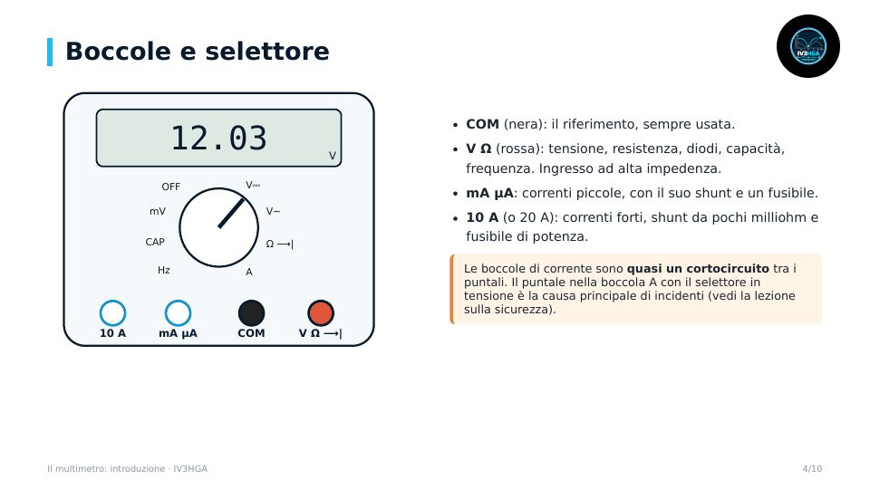

Capitolo 1 · Modulo 1
Il multimetro: introduzione
- Che cosa misura, analogico e digitale
- Boccole e selettore: dove va il puntale rosso
- Cifre e conteggi: 2000, 6000, 50 000
- Risoluzione e precisione: ±(% lettura + digit) con esempi
- Valore medio e true RMS, autorange, come scegliere un multimetro